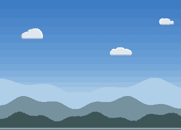

<title>Sky and Hills Study</title>
<meta name="claude:viewport-fit-sides" content="cover">
<link rel="preconnect" href="https://fonts.googleapis.com">
<link rel="stylesheet" href="https://fonts.googleapis.com/css2?family=Pixelify+Sans:wght@500;700&family=Source+Serif+4:opsz,wght@8..60,400;8..60,600&family=JetBrains+Mono:wght@400;600&display=swap">
<style>
/* Layout: a single reading column like a field-station report, with full-bleed image plates and swatch strips drawn from the lake itself. */
:root {
  --bg: #eef1ec;
  --panel: #e2e8e2;
  --ink: #1b2826;
  --muted: #566764;
  --line: #c3cec7;
  --accent: #a24f45;
  --pine: #2d5747;
  --display: "Pixelify Sans", "Courier New", monospace;
  --body: "Source Serif 4", Georgia, "Times New Roman", serif;
  --mono: "JetBrains Mono", ui-monospace, Menlo, Consolas, monospace;
}
@media (prefers-color-scheme: dark) {
  :root:not([data-theme="light"]) {
    --bg: #0f1918; --panel: #172423; --ink: #e2e9e4; --muted: #97a9a4; --line: #2a3b39;
    --accent: #e29a8b; --pine: #86bba4; color-scheme: dark;
  }
}
:root[data-theme="dark"] {
  --bg: #0f1918; --panel: #172423; --ink: #e2e9e4; --muted: #97a9a4; --line: #2a3b39;
  --accent: #e29a8b; --pine: #86bba4; color-scheme: dark;
}
* { box-sizing: border-box; }
body {
  background: var(--bg); color: var(--ink); font-family: var(--body); font-size: 17px; line-height: 1.6;
  padding-left: max(16px, env(safe-area-inset-left, 0px)); padding-right: max(16px, env(safe-area-inset-right, 0px));
  padding-block: 28px 64px;
}
main { max-width: 720px; margin: 0 auto; display: flex; flex-direction: column; gap: 44px; }
h1, h2, h3 { font-family: var(--display); font-weight: 700; line-height: 1.15; text-wrap: balance; margin: 0; }
h1 { font-size: clamp(32px, 7vw, 46px); letter-spacing: 0.5px; }
h2 { font-size: 26px; color: var(--pine); }
h3 { font-size: 19px; font-weight: 500; }
p { margin: 0; max-width: 65ch; }
section { display: flex; flex-direction: column; gap: 16px; }
.eyebrow { font-family: var(--mono); font-size: 12px; letter-spacing: 1.5px; text-transform: uppercase; color: var(--muted); }
.lede { font-size: 19px; }
a { color: var(--accent); }
figure { margin: 0; display: flex; flex-direction: column; gap: 8px; }
figure img { width: 100%; image-rendering: pixelated; border-radius: 4px; display: block; }
figcaption { font-size: 14px; color: var(--muted); }
.stats { display: grid; grid-template-columns: repeat(auto-fit, minmax(150px, 1fr)); gap: 12px; }
.stat { border-top: 3px solid var(--pine); padding-top: 8px; display: flex; flex-direction: column; gap: 2px; }
.stat b { font-family: var(--display); font-size: 30px; font-weight: 700; font-variant-numeric: tabular-nums; }
.stat span { font-size: 14px; color: var(--muted); }
ol.findings { margin: 0; padding-left: 1.4em; display: flex; flex-direction: column; gap: 12px; }
ol.findings li::marker { font-family: var(--mono); color: var(--accent); }
ol.findings b { font-weight: 600; }
.meter { display: grid; grid-template-columns: 9.5em 1fr; gap: 6px 12px; align-items: center; font-size: 14px; }
.meter .bars { display: flex; flex-direction: column; gap: 3px; }
.bar { height: 10px; border-radius: 2px; background: var(--line); position: relative; }
.bar i { position: absolute; inset: 0 auto 0 0; border-radius: 2px; }
.bar.ours i { background: var(--pine); }
.bar.pack i { background: var(--accent); }
.legend { display: flex; gap: 16px; font-size: 13px; color: var(--muted); flex-wrap: wrap; }
.legend span::before { content: ""; display: inline-block; width: 10px; height: 10px; border-radius: 2px; margin-right: 6px; vertical-align: -1px; }
.legend .l-ours::before { background: var(--pine); }
.legend .l-pack::before { background: var(--accent); }
.skies { display: flex; flex-direction: column; gap: 6px; }
.sky { display: grid; grid-template-columns: 7.5em 1fr; align-items: center; gap: 12px; font-size: 14px; }
.sky div { height: 30px; border-radius: 3px; }
.swatches { display: grid; grid-template-columns: repeat(auto-fit, minmax(200px, 1fr)); gap: 14px; }
.sw { display: flex; flex-direction: column; gap: 6px; min-width: 0; }
.sw .strip { display: flex; height: 34px; border-radius: 3px; overflow: hidden; }
.sw .strip i { flex: 1; }
.sw b { font-weight: 600; font-size: 15px; }
.sw span { font-size: 13px; color: var(--muted); font-family: var(--mono); overflow-wrap: anywhere; }
.lessons { display: grid; grid-template-columns: repeat(auto-fit, minmax(250px, 1fr)); gap: 18px 24px; }
.lessons div { display: flex; flex-direction: column; gap: 4px; }
.lessons h3 { color: var(--accent); }
.lessons p { font-size: 15px; }
ol.rules { margin: 0; padding: 0; list-style: none; counter-reset: r; display: flex; flex-direction: column; border-top: 1px solid var(--line); }
ol.rules li { counter-increment: r; display: grid; grid-template-columns: 2.4em 1fr; gap: 8px; padding: 12px 0; border-bottom: 1px solid var(--line); }
ol.rules li::before { content: counter(r, decimal-leading-zero); font-family: var(--mono); color: var(--muted); font-size: 14px; padding-top: 3px; }
.qs { display: flex; flex-direction: column; gap: 14px; }
.q { background: var(--panel); border-radius: 6px; padding: 16px 18px; display: flex; flex-direction: column; gap: 8px; }
.q h3 { font-size: 18px; }
.q ul { margin: 0; padding-left: 1.2em; font-size: 15px; display: flex; flex-direction: column; gap: 4px; }
.q .rec { font-size: 14px; color: var(--pine); font-family: var(--mono); }
.next { font-size: 15px; color: var(--muted); }
code { font-family: var(--mono); font-size: 0.85em; }
.viewer { display: flex; flex-direction: column; gap: 10px; }
.viewer img { width: 100%; height: auto; image-rendering: pixelated; border-radius: 4px; display: block; aspect-ratio: 360 / 260; background: var(--panel); }
.pick { display: flex; flex-wrap: wrap; gap: 6px; }
.pick button { font: 600 14px var(--mono); padding: 8px 12px; border-radius: 4px; border: 1px solid var(--line); background: var(--panel); color: var(--ink); cursor: pointer; min-width: 44px; }
.pick button[aria-pressed="true"] { background: var(--pine); color: var(--bg); border-color: var(--pine); }
.pick button:focus-visible { outline: 2px solid var(--accent); outline-offset: 2px; }
.cap { font-size: 15px; min-height: 3em; }
.cards { display: grid; grid-template-columns: repeat(auto-fit, minmax(210px, 1fr)); gap: 16px; }
.card { display: flex; flex-direction: column; gap: 6px; }
.card h3 { color: var(--accent); }
.card p { font-size: 15px; }
.card ul { margin: 0; padding-left: 1.1em; font-size: 14px; color: var(--muted); display: flex; flex-direction: column; gap: 3px; }
</style>

<main>
  <header style="display:flex;flex-direction:column;gap:12px">
    <span class="eyebrow">Reel It In · Study 1 · 22 Oct 2026</span>
    <h1>The sky and the distant hills</h1>
    <p class="lede">Three versions of everything above the far bank, at full game width and game size, lit for each time of day by the materials library. Flip between them and the game as it is now.</p>
  </header>

  <section class="viewer">
    <div class="pick" role="group" aria-label="Version">
      <button id="v-now" data-v="now" aria-pressed="false">Now</button>
      <button id="v-A" data-v="A" aria-pressed="true">A</button>
      <button id="v-B" data-v="B" aria-pressed="false">B</button>
      <button id="v-C" data-v="C" aria-pressed="false">C</button>
    </div>
    <div class="pick" role="group" aria-label="Time of day">
      <button id="t-dawn" data-t="dawn" aria-pressed="false">Dawn</button>
      <button id="t-day" data-t="day" aria-pressed="true">Day</button>
      <button id="t-golden" data-t="golden" aria-pressed="false">Golden</button>
      <button id="t-dusk" data-t="dusk" aria-pressed="false">Dusk</button>
      <button id="t-night" data-t="night" aria-pressed="false">Night</button>
    </div>
    
    <p class="cap" id="cap"></p>
  </section>

  <section>
    <span class="eyebrow">The three versions</span>
    <h2>What each one tries</h2>
    <div class="cards">
      <div class="card"><h3>A &middot; Haze bands</h3><p>Three low, rounded, forested ridges, each farther one lighter and nearer the sky's colour. Flat sky bands, a few rim-lit cumulus.</p><ul><li>Calm; lets the far bank and the lake lead</li><li>Closest to the research's "distance in bands"</li></ul></div>
      <div class="card"><h3>B &middot; Spire skyline</h3><p>The same hazy ridges, with the nearest one edged in the jagged line of fir and spruce spires and a few tall white pines standing above, plus the sun or moon.</p><ul><li>The most north-woods, and the busiest</li><li>The white pines still read a little blocky; they'd get a study of their own</li></ul></div>
      <div class="card"><h3>C &middot; Big sky</h3><p>The far shore of a big lake: two thin, far ridges low down and the rest sky, with high wisps and a cumulus bank on the horizon.</p><ul><li>Open and quiet; the sky carries the time of day</li><li>Leaves the most room for the far bank to be the star</li></ul></div>
    </div>
  </section>

  <section>
    <span class="eyebrow">What stays the same in all three</span>
    <h2>The rules at work</h2>
    <p>Every version is drawn at true size on the one pixel grid. The sky is flat bands that get thinner toward the horizon, joined by a single row of ordered dither. The hills take their colours from the sky, getting lighter and softer with distance, and turn into dark silhouettes at night. The clouds are one style: spheres on a flat base, a rim of light on the sun's side and shade along the bottom. At night there are stars and a crescent moon.</p>
    <p>The far bank (trees, granite, waterfall) sits in front of all this and comes in a later study, so the hills here are what shows above it.</p>
  </section>

  <section>
    <span class="eyebrow">Your call</span>
    <h2>Pick one, or mix</h2>
    <p>Tell me A, B or C, or a mix (for example "B's skyline with C's clouds"), and anything that feels off. The one you pick goes into the game next, with the time-of-day palettes, and replaces the snowy peaks.</p>
  </section>
</main>
<script>
(function () {
  var notes = {
    now: "The game today: the pack's snowy peaks and banded sky under one tint, drawn at twice the pixel size of everything else.",
    A: "A: three hazy ridges and a calm sky.",
    B: "B: hazy ridges with a skyline of spires and tall white pines, and the sun or moon.",
    C: "C: a big sky over two far, low ridges, with high wisps and a cumulus bank."
  };
  var times = { dawn: "dawn", day: "midday", golden: "golden hour", dusk: "dusk", night: "night" };
  var v = "A", t = "day";
  var img = document.getElementById("shot"), cap = document.getElementById("cap");
  function show() {
    img.src = "study1/" + v + "-" + t + ".png";
    img.alt = (v === "now" ? "The game now" : "Version " + v) + " at " + times[t];
    cap.textContent = notes[v];
    document.querySelectorAll("[data-v]").forEach(function (b) { b.setAttribute("aria-pressed", b.dataset.v === v); });
    document.querySelectorAll("[data-t]").forEach(function (b) { b.setAttribute("aria-pressed", b.dataset.t === t); });
  }
  document.querySelectorAll("[data-v]").forEach(function (b) { b.addEventListener("click", function () { v = b.dataset.v; show(); }); });
  document.querySelectorAll("[data-t]").forEach(function (b) { b.addEventListener("click", function () { t = b.dataset.t; show(); }); });
  show();
})();
</script>
